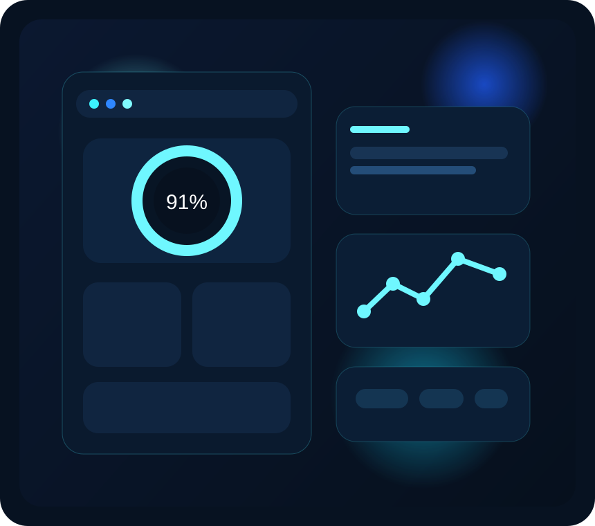

What The System Delivers
Focusense Pro presents analysis in a visual and easy-to-read format. Instead of dense technical output, the final system provides clean dashboard-style insights and session interpretation.
Session Dashboard Preview
A live summary area can display emotion trend, gesture response, and a final focus score while the user session is active.
Insight Report Preview
The report view can summarize user engagement quality, consistency, and suggested improvement areas in a compact format.

Focus Score
A simple numerical or visual score makes it easy to understand how focused the user remained during the session.
Behavior Summary
Emotion, gesture movement, and typing stability are summarized to give balanced productivity interpretation.
Smart Reporting
The system can generate readable insights that help explain strengths, weak points, and overall session quality.